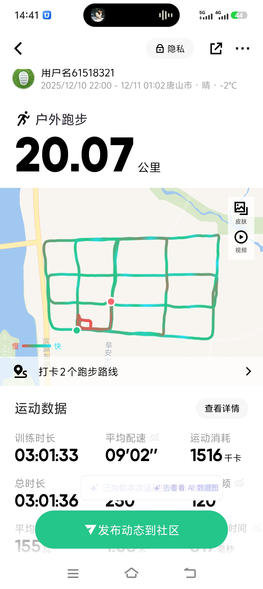
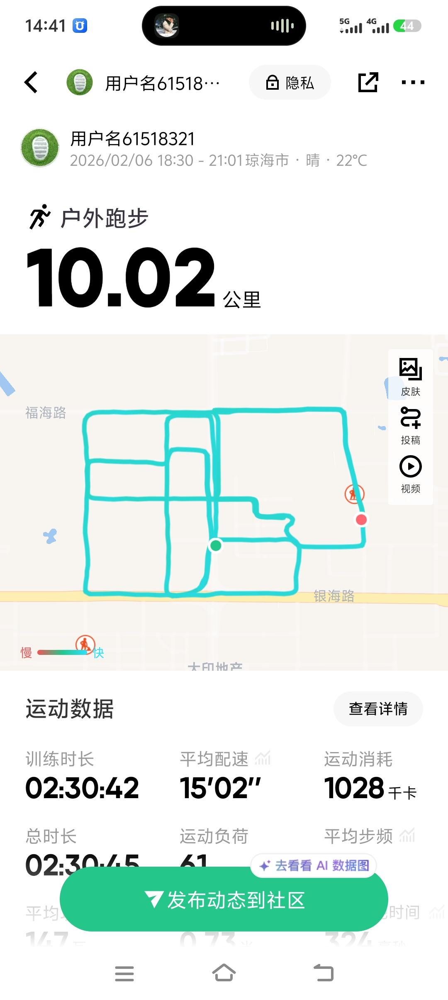
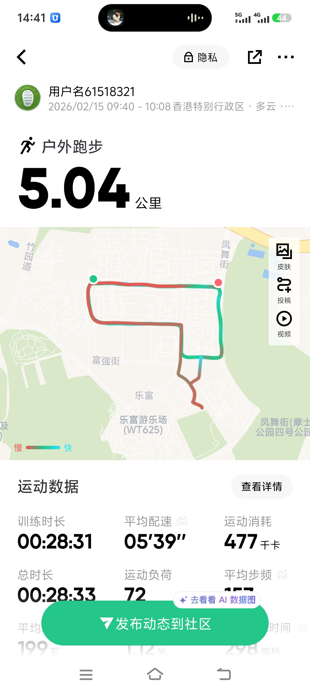

从5K到20K：我的Keep阶段性跑量突破记录



最近完成了一次20.07公里的超长距离拉练，耗时3小时01分，平均配速9'02"。虽然速度不快，但在零下2℃的唐山海边，能坚持跑完20公里，是对体能和意志的双重考验。
回顾这一路的进步：从最初5.04公里用时28分钟（配速5'39"），到后来10.02公里用时2.5小时（配速15'02"），再到现在的20公里。每一次距离的增加，都是对自我极限的挑战。
这近 5000 公里，是 1171 次和自己的对话。不是每一次都轻松，但每一次都有意义。跑步教会我的，不只是体力，更是面对生活起伏的韧性。
如果你也想开始跑步，别追求速度，先追求"上场"。从一公里开始，让轨迹在地图上慢慢延长。未来的路还很长，重要的是你一直在路上。